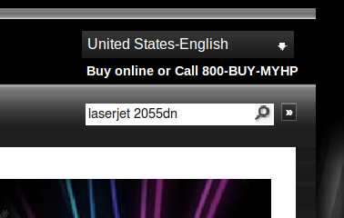

Assistència, diagnosi i resolució d'incidències
Els ordinadors, en els nostres temps, han esdevingut eines indispensables. Quan no funcionen com s’espera poden generar molts mals de caps i grans pèrdues econòmiques. Per això, qualsevol empresa necessita un servei d’assistència tècnica per a les incidències que, de ben segur, tard o d’hora, es produiran en els seus sistemes informàtics. L’assistència tècnica informàtica és fonamental per a les empreses i, per això, per als professionals de la informàtica, ha esdevingut un àmbit professional important.
Aquesta unitat té com a objectiu formar l’estudiant en tot allò que fa referència a l’assistència tècnica i resolució d’incidències.
Documentació tècnica
La informàtica -tant el programari com el maquinari- es troba en evolució constant. Els ordinadors envelleixen ràpidament i els sistemes operatius queden desfasats en pocs anys. Molt sovint, el tècnic informàtic s’enfrontarà a situacions noves amb què no s’havia trobat mai abans: nous sistemes, nous programes… En la majoria dels casos l’èxit d’un professional en la resolució d’una incidència o en el muntatge d’un sistema nou serà determinat per la seva habilitat en la consulta de la documentació tècnica. La majoria d’estudiants no s’imaginen com n’és d’important. La perícia en la recerca, el filtratge i la interpretació de documentació tècnica són fonamentals. Un bon professional de la informàtica no és aquell que és capaç de memoritzar la resolució de problemes sinó aquell que, davant d’un problema nou, coneix els procediments per buscar-hi una solució. I, gairebé sempre, la solució passa per la consulta de documentació tècnica.
Imaginem-nos que hem tingut una habilitat perspicaç i que hem aconseguit una solució a un problema que gairebé era un repte professional. Estem orgullosos perquè, després d’un munt d’hores de recerca de documentació i de proves fallides, finalment hi hem trobat la solució. Ens hem guanyat el respecte dels companys i la felicitació del nostre cap. Bé, doncs, tot i que sembla que ja hàgim acabat, encara falta el més important: documentar la solució de la incidència. Al cap de pocs dies, si ens tornem a trobar amb el mateix problema ja no en recordarem la solució, especialment si aquesta és laboriosa. Així, doncs, la documentació de les incidències permet, que en cas que es tornin a produir, es puguin resoldre més ràpidament.
L’habilitat en la consulta de documentació tècnica és fonamental per a la resolució de problemes.
Interpretació i anàlisi de documentació tècnica
Qualsevol producte -sigui de maquinari o de programari- va sempre acompanyat de la seva documentació tècnica. El fabricant posa a disposició dels consumidors tota la informació que considera important. Aquesta seria la documentació oficial del producte. Cada vegada més sovint els fabricants proporcionen aquesta documentació en format digital ja que és menys costosa. No ens hem d’estranyar, doncs, si, en comprar un producte, dins la capsa ja no hi trobem el manual tradicional sinó un CD-ROM o, en el pitjor dels casos, un paperet breu amb les instruccions mínimes i, tot seguit, una referència a la seva pàgina web.
L’anglès us serà molt útil en la recerca de documentació.
La documentació tècnica quasi bé sempre és en anglès. Raó de pes per aprendre’l. Sovint aquesta és la dificultat més gran als inicis, però ràpidament l’aprenent agafa traça amb l’anglès tècnic i se’n surt.
Paraules que convé recordar
L’anglès tècnic és més fàcil si un recorda algunes paraules fonamentals. Per exemple:
- Performance: rendiment
- Display: pantalla
- Device: dispositiu
- Screen: pantalla
- troubleshooting: problemes
- Upgrade: actualitzar
- Shut down: apagar
- Restart: reiniciar
- Download: descarregar
- Deploy: desplegar
- Issue: tema
- Settings: configuració
- Succesful: amb èxit
- Post: missatge
- Reply: resposta
- Environment: entorn
- Log: registre
- Release: alliberament de versió
Podem dividir la documentació tècnica en:
- Documentació oficial
- Documentació no oficial
La documentació oficial és la proporcionada pel fabricant i per tant la més fiable. Per tant, abans d’instal·lar qualsevol producte, de muntar qualsevol sistema o afrontar qualsevol incidència haurem d’aconseguir la documentació oficial. Sempre.
Tot i això, pot ser necessari complementar la documentació oficial amb d’altra de no oficial. A vegades, apareixen errors nous que el fabricant no havia previst i que, en canvi, altres usuaris poden haver documentat. A Internet és ple de grups d’usuaris, i a vegades, n’hi ha prou de copiar i enganxar el text de l’error a un cercador per trobar documentada una solució.
La documentació no oficial la podeu trobar a fòrums, grups d’usuaris, blogs… És necessari tenir una certa destresa en la recerca per Internet i tenir criteri per seleccionar una documentació que resulti útil. Com sempre la pràctica hi ajuda molt.
Identificació del producte
Abans de procedir a les recerques de documentació és molt important identificar el producte.
1. En un producte de maquinari (hardware), tindríem les característiques següents que l’identificarien:
- fabricant
- model
- núm. de sèrie
Exemple: HP LaserJet 2055dn
en què: HP (Hewlett-Packard) n’és el fabricant i LaserJet 2055dn, el model.
El número de serie identifica unívocament el dispositiu. Si necessitem fer alguna consulta al servei oficial del producte molt sovint ens el demanaran. Ells disposen d’una base de dades dels productes i, a partir del número de sèrie, poden saber amb rapidesa l’antiguitat del producte i, per tant, si està o no en garantia. Ens diran també si encara ofereixen suport per a aquell producte. Cada vegada passa més que, amb la rapidesa que evoluciona el mercat informàtic, els fabricants descataloguen els seus productes vells amb més rapidesa i deixen de donar suport tècnic, subministres…
2. Un producte de programari (software) s’identifica per:
- empresa desenvolupadora, grup desenvolupador o persona desenvolupadora
- nom del programa
- versió.
Exemple: Microsoft Windows 7 Professional
en què: Microsoft n’és l’empresa desenvolupadora i Windows 7 Professional, el nom del sistema operatiu.
A més a més la versió identifica el producte de forma més precisa. Els programes evolucionen -s’arreglen els problemes que s’hi ha trobat, s’afegeixen noves funcionalitats…-, el programa modificat s’allibera com una nova versió. D’aquesta manera es pot distingir de les anteriors. En el cas concret de Windows 7 Professional, Microsoft cada cert temps, agrupa totes les actualitzacions en el que anomenen un ServicePack. Podríem considerar doncs que Windows 7 Professional ServicePack 1 (ja disponible) és una versió millorada del Windows 7 Professional. Ubuntu fa essencialment el mateix tot i que fa servir numeracions per distingir les noves versions. La versió més actual del sistema Ubuntu 10.04 és la 2, de tal manera que podrem descarregar l’Ubuntu 10.04.2. Però és possible que amb el transcurs del temps hi hagin versions més actualitzades.
En cas que necessitéssim contactar amb el suport tècnic que ofereix el desenvolupador del programari, caldrà assabentar-se bé de quin és el contracte (en forma de llicència) que l’usuari (o empresa) hi té. Ens haurem de limitar a demanar l’assistència que tinguem contractada. No cal dir que demanar assistència d’un producte que hàgim (o hagin) obtingut il·legalment pot posar en un compromís l’usuari o l’empresa. Així, doncs, caldrà demanar de primer quina relació en forma de llicències té l’empresa amb el desenvolupador.
Estructura de la documentació tècnica
La documentació tècnica s’acostuma a estructurar en alguns d’aquests ítems:
- Identificació: fabricant, model, versió…
- Índex.
- Advertències o mesures de seguretat (warning o personal safety): tot allò que cal saber abans d’instal·lar el producte.
- Instal·lació i configuració de producte: passos que cal seguir per instal·lar el producte.
- Especificacions tècniques (technical specifications): detalls tècnics del producte.
- Requisits del sistema (requirements): requisits que té el producte perquè funcioni correctament.
- Resolucions de problemes (troubleshooting): ajuda per a la diagnosi d’incidències, símptomes i solucions.
- Garantia (warranty): cobertura de costos en cas de fallada i quins són els terminis.
- Condicions o llicència d’ús (license): limitacions d’ús del producte.
Recerca de documentació tècnica
Quan es produeix una incidència, el tècnic no té quasi bé mai el manual a mà. S’ha extraviat o bé es va llençar ja fa temps. La primera de les dificultats rau, doncs, a trobar-lo. Per sort, la gran majoria dels fabricants els pengen als seus webs.
Si utilitzeu el cercador Google, us poden ser d’utilitat les Google tips, ajudes a la recerca.
Sovint, n’hi ha prou de fer una cerca de l’estil:
“HP LaserJet 2055dn manual”.
Però moltes vegades això no funciona. Acabem perduts en pàgines estranyes o bé en pàgines de venda de productes en línia.
Hi ha moltes pàgines a Internet que simulen proporcionar manuals, arxius, controladors (drivers)… però, en realitat, la intenció que tenen és una altra: fer-nos gastar els diners, inundar-nos els ulls de publicitat o, fins i tot, fer-nos instal·lar programari maliciós.
Quan fem una recerca a l’estil “HP LaserJet 2055dn manual” (figura),
És important no perdre el temps. Cal anar al gra i per això gairebé sempre el millor és descarregar el manual del web del fabricant.
de totes les respostes que ens proporcioni el cercador, cal seleccionar les entrades en què les adreces web coincideixin amb el nom del fabricant. Per exemple, si el fabricant és HP seleccionaríem les entrades que coincideixen amb el domini del fabricant ….hp.com, ….hp.es, etc. Les adreces web al Google estan situades en la part inferior de color verd. Fixeu-vos que, en aquesta cerca, la primera entrada no coincideix amb el fabricant sinó que el domini és retrevo.com. Sembla que a retrevo.com ens donen el manual, però si prosseguiu veureu que us demanaran la vostra adreça electrònica, que és segurament el que els deu interessar. Per tant, descartarem aquesta opció. La segona opció sí que forma part del domini hp: h30434.www3.hp.com, però pel que sembla és un fòrum d’usuaris. En el tercer cas passa el mateix. No hem tingut sort.
Just a sota del tercer resultat tenim l’opció d’ampliar les cerques sota el domini hp, mitjançant l’enllaç Mostra més resultats d’HP.com.
De fet, si volem limitar les cerques a un domini concret, al Google podem utilitzar la sintaxi site:domini.com. Així, doncs, podíem haver procedit a cercar: “hp laserjet 2055dn manual” en el domini hp.com de la manera que s’exemplifica a la figura.
Si us fixeu a la figura, tots els resultats són de forums de hp. No és això el que estàvem buscant. Aquest últim truc no ha funcionat. Moltes vegades la via directa -col·locar en un cercador el producte que volem buscar- funciona la mar de bé però d’altres, com ara, resulta infructuosa.
Llavors, el millor és procedir d’una manera més esglaonada:
- Busqueu el web del fabricant. Per exemple, cerquem HP al buscador.
- Busqueu el producte.
1. El primer pas, buscar el web del fabricant, sembla una obvietat, però aviat es veurà que no es així.
Les multinacionals tenen una pàgina web per país. En la figura podeu veure la web l’espanyola d’HP. Les traduccions són beneficioses, especialment pels usuaris que tenen dificultats amb l’idioma. Ara bé, el problema és que les pàgines i l’estructura del web en cada un dels dominis de cada país no és igual. És a dir, no és una traducció de la pàgina de referència (diguem l’anglesa), que és el que esperaríem, sinó que en la gran majoria dels casos n’és una simplificació barroera: traduir tantes pàgines, en un mercat tan competitiu, tan ràpid i canviant, és massa car i, en conseqüència, la majoria de vegades, no es fa.
Per això, en la majoria dels casos, és molt recomanable consultar directament el web dels Estats Units (figura) o de la Gran Bretanya o, encara millor, si existeix l’opció “global” que és la referència màxima, i que, generalment serà en anglès.
Com cercar un producte
Si hi ha un cercador al web del fabricant és important no incloure el fabricant. No buscarem HP LaserJet 2055dn sinó que, òbviament, en el web del fabricant ja hi som i, per tant, hi buscarem només el producte, sense posar-hi fabricant: LaserJet 2055dn. Si així no tenim sort, a vegades resulta productiu acotar i buscar coses de l’estil: “LaserJet”, “2055dn”, “2055, “dn”.
- 
- Buscador HPCercador pàgina HP
2. El segon pas és trobar el producte dins del web. Molts fabricants disposen d’un cercador, és el cas d’HP, tant en la versió espanyola com a la dels EUA, a la part superior a la dreta hi ha un cercador.
Si busqueu la impressora laserjet 2055dn, com podeu veure a la figura:
En la primera columna, Quick links, tenim tots els enllaços del producte. L’últim és product manuals. Si hi cliquem anem a parar a la pàgina de descàrrega de manuals (figura):
El primer que cal destacar és que el manual per a la impressora 2055dn no hi és. Els manuals són comuns per a totes les impressores de la sèrie 2050. Això ho fan sovint per estalviar costos.
L’altre punt que cal destacar és que no hi ha un manual sinó que n’hi ha diversos. Alguns més simples per a usuaris convencionals i d’altres de més complexos per a tècnics.
Finalment fixeu-vos que tots els manuals són en format pdf. Aquest és el format més habitual.
Productes descatalogats
A vegades els cercadors dels fabricants no troben el nostre producte. Això es pot deure al fet que els productes han complert el seu cicle vital i estan descatalogats. Fins i tot en aquests casos, el fabricant acostuma a proporcionar la documentació tècnica tot i que, a vegades, ho fa fora del domini principal, en una altra adreça.
En els webs dels fabricants, quan hi busqueu documentació tècnica, caldrà prestar atenció als ítems següents:
- products,
- support,
que acostumareu a trobar en tots els webs i que molt sovint seran la porta a la documentació tècnica.
Gestió d'incidències
El terme servei d’assistència tècnica (help desk) designa un servei en què la persona ajudant o assistent, en disposar de prou coneixements i tècniques d’informàtica, pot ajudar l’usuari a diagnosticar i resoldre, en el dia a dia, les incidències relacionades amb l’ordinador del seu lloc de treball, ja siguin per causes de maquinari o de programari.
El SAU (servei d’atenció a l’usuari) és format per un grup de persones coordinades per un cap, que donen suport informàtic als usuaris d’una empresa o a un particular. El tècnic superior administrador de sistemes informàtics i xarxes pot exercir com a tècnic que dóna suport a l’usuari, o fins i tot com a cap d’un servei de SAU.
Aprendrem amb més detall diversos sistemes d’atenció, els passos que cal seguir fins a arribar al diagnòstic i algunes tècniques per resoldre les incidències.
Utilització de tècniques de comunicació per donar assistència a la persona usuària
En una petita empresa, la funció de l’assistència a la persona usuària pot recaure en la persona responsable dels sistemes informàtics. Quan aquest tipus de feina arriba a un volum considerable, es crea una nova figura: el servei d’assistència tècnica (help desk).
Assistència personal a l'usuari
El càrrec d’assistent tècnic requereix una gran capacitat de resolució de problemes. L’experiència informàtica és vital, ja que és la base de coneixement i d’informació per poder elaborar diagnòstics i resoldre les incidències. Tot i que pot semblar que amb aquests ingredients en podem tenir prou per resoldre la feina, el tracte i la forma en la comunicació és un altre factor clau. El tracte de l’assistent tècnic amb la persona usuària és directe i, per tant, aquest haurà de tenir un to cordial, amable i correcte, a més d’una bona presència.
Els passos que cal seguir en aquests tipus de resolucions podrien ser els següents:
- Escoltar la descripció del problema,
- Fer-ne el diagnòstic.
- Resoldre la incidència.
Un cop fet el diagnòstic, pot ser interessant guiar la persona usuària perquè sigui ella mateixa la que resolgui el problema fent les accions en la màquina. És un plantejament diferent de resoldre i prou. Creem un procés d’ensenyament-aprenentatge. D’aquesta manera, no sols se soluciona el problema, sinó que fem partícip la persona usuària en el procés, que aprèn una mica més en la seva feina. Probablement, hi haurà passos que, a la persona usuària, se li escaparan, però és interessant aplicar aquest mètode d’ensenyament-aprenentatge en incidències de resolució bàsica. I pensant en el treball de l’endemà, ho podem considerar com una inversió de futur, ja que descarregarà l’assistent de les feines que el mateix usuari pot arribar a resoldre d’una manera senzilla.
Assistència telefònica a l'usuari
El procés que cal seguir serà el següent:
- Rebre la trucada.
- Presentar-se a la persona usuària.
- Demanar la descripció del problema.
- Fer-ne el diagnòstic.
- Resoldre la incidència.
En aquest tipus d’atenció, la mateixa persona usuària soluciona les incidències guiada per telèfon, pas a pas. Aquest sistema és eficient quan la resolució consta de passos simples.
Quan el problema és més greu, o és inevitable la presència física, caldrà optar per la intervenció al mateix lloc de treball. Hi ha situacions, però, que es poden arribar a solucionar utilitzant programes de control remot mitjançant la Xarxa, els quals permeten actuar en la màquina de l’usuari a distància.
L’atenció local és la resolució d’incidències al mateix lloc de treball, mentre que l’atenció remota és la resolució d’incidències per telèfon o bé per programes de control remot.
En funció de l’organització de la informàtica de l’empresa en què treballem, podem trobar, fins i tot, que el sistema de resolució d’incidències sigui gestionat per una empresa de serveis externa especialitzada, en què l’atenció a l’usuari també es fa o bé telefònicament, o bé des del mateix lloc de treball, o d’una manera remota. I de vegades, en funció de la gravetat de la incidència i dels costos que representaria l’enviament d’un tècnic al lloc de treball, hi ha serveis que opten per fer la tramesa de l’equip per missatgeria a una seu central, on l’equip és examinat i, quan ja és reparat, es retorna al lloc de treball des d’on es va enviar.
Els sistemes d’atenció remota poden tenir diverses persones treballant, amb tasques ben diferenciades. En funció dels coneixements, experiència, tècnica i capacitats, hi podem trobar, per exemple, les persones següents:
Assistència remota i d'una manera guiada
L’assistència d’una manera guiada és la que dóna l’assistent quan informa l’usuari davant l’ordinador, amb molt detall, dels passos que ha de seguir fins a solucionar la incidència. L’assistència remota es dóna quan un tècnic té drets per administrar el nostre ordinador i hi pot entrar per la Xarxa per fer-hi qualsevol operació d’implantació de programari.
- Persones assistents. Atenen la trucada telefònica i procuren diagnosticar la incidència, i guien la persona usuària en les resolucions bàsiques.
- Persones assistents tècniques remotes. Reben les incidències d’un nivell de complexitat superior i les intenten solucionar, ja sigui d’una manera guiada o remota.
- Persones assistents tècniques de camp. Es desplacen al lloc de la incidència físicament i reparen els equips.
- Persones supervisores. Vigilen que tot funcioni, atenen reclamacions, prenen dades i fan estadístiques sobre els costos o sobre el sistema per poder-lo dimensionar, per exemple.
Aquests tipus de serveis s’estan incorporant, fins i tot, en empreses de producció per a l’atenció dels seus clients. Per això, podem trobar diferents noms per a aquest servei, com, per exemple:
1. Centre d’atenció telefònica (call center). Són empreses dedicades a rebre trucades per acabar desviant la trucada al tècnic corresponent.
El desviament de la trucada es pot fer indicant a l’usuari unes opcions que escollirà prement la tecla o tecles del seu telèfon, o bé la persona operadora li farà les preguntes oralment i desviarà la trucada d’una manera manual.
2. CRM (customer relationship management) o gestió de la relació amb els clients. Aquestes empreses fan servir mètodes de gerència amb la relació amb el client, com a estratègia corporativa per millorar la producció de l’empresa. La informació emmagatzemada dels clients pot ser analitzada i estudiada.
Per tal d’assolir aquests objectius, és habitual que el centre disposi d’un programari de gestió de control de trucades. Aquest tipus de programes permeten conèixer, en tot moment, les gestions administratives, comercials i de suport fetes per als clients o les persones usuàries.
Entre altres funcions, aquests programes permeten el següent:
- Seguir i controlar les diferents incidències.
- Generar estadístiques de persones ateses per hora, persones en espera, mitjana de trucades per incidència, incidències per aplicació, etc.
- Gestionar una base de dades de coneixement que conté tota la documentació sobre preguntes i respostes, incidències anteriors ja resoltes i passos per resoldre-les.
- Integrar el sistema amb la pròpia centraleta telefònica, per obtenir dades de durada de trucades, enregistrament, atenció telefònica automàtica a la persona usuària, etc.
- Seguir mecanismes de trucada periòdica als usuaris, per exemple, per fer el seguiment d’una intervenció. En aquest cas, es truca a l’usuari per comprovar que la resolució de la incidència es va fer correctament i en el termini correcte. Altres vegades es fan enquestes sobre el grau de satisfacció en les intervencions.
Aquests centres, com qualsevol altre departament dins una empresa, disposen d’uns objectius determinats:
- Reduir costos de trucades i temps de les intervencions.
- Incrementar el rendiment i la rendibilitat.
- Automatitzar determinats processos.
- Minimitzar el nombre de personal altament qualificat.
- Millorar el control en les diferents tasques.
- Fer el sistema independent de les persones i optimitzar-lo si funciona per torns laborals.
- Obtenir estadístiques en línia sobre les intervencions.
Els centres d’atenció telefònica poden indicar, a l’assistent, el procediment que ha de seguir gràcies a les trucades de seguiment. En cas que la incidència ja estigui resolta, es pot donar per tancada. Cal dir que, normalment, si les persones usuàries no truquen per insistir en la incidència, és perquè ja ha estat resolta. Tanmateix, les trucades de seguiment fan que les persones usuàries se sentin acompanyades per l’equip d’ajuda.
Internet protocol o VoIP
La veu sobre IP, també coneguda com a telefonia IP (Internet protocol) o simplement VoIP (de l’anglès voice over IP), és una tecnologia per mantenir converses amb veu en Internet o en qualsevol xarxa IP. Aquesta tecnologia no necessita una operadora de telefonia convencional, ja que aprofita les tecnologies que ens ofereix la xarxa.
Quan el centre d’atenció telefònica és de la mateixa empresa, un dels objectius principals acostuma a ser la reducció de costos telefònics. Avui dia, amb la implantació de sistemes ADSL de baix cost, fins i tot s’ha aconseguit que l’atenció pugui ser per veu mitjançant sistemes de xarxa informàtica que permeten trucades mitjançant el protocol IP (VoIP, voice over IP) com podeu veure en la figura, que amb el maquinari adient permeten la integració en xarxes de telefonia convencional.
Altres sistemes per reduir els costos telefònics
D’altres sistemes són els programes com ara Skype, Netmeeting, Messenger, Wengo, els quals a més de veu també permeten l’atenció per xat. També hi ha serveis d’atenció per correu electrònic. Hi ha empreses que disposen de fòrums oberts, de manera que si algú es troba amb un problema el pot publicar i algú de la mateixa empresa o de fora en pot proposar una solució.
També hi ha centres que elaboren documentació pública sobre programes, incidències, aplicacions i productes. Aquesta informació queda publicada en el web de l’empresa i, en estar disponible per als usuaris, farà que un cert nombre resolguin el problema per ells mateixos.
El VNC (virtual network computer) és una de les eines més esteses per intervenir d’una manera remota en un lloc de treball. És un programari gratuït i, mitjançant una comunicació a distància, pot operar amb una línia d’ADSL o una xarxa d’àrea local.
Aquest tipus de programa mostra a l’assistent (tècnic) la pantalla de l’ordinador en què cal intervenir, i amb el ratolí i el teclat permet controlar l’ordinador d’una manera remota, com si hi fos realment al davant. El fet de no haver-se de desplaçar ajuda a respondre amb un temps acceptable. Si la xarxa no és prou ràpida, és més recomanable la utilització de la versió “lleugera” del programa, la TightVNC. Aquesta compacta molt les dades gràfiques i de control, la qual cosa permet l’atenció per línies de mòdem més lentes. Totes dues versions funcionen en TCP/IP.
Diagnosi de la incidència a partir d'utilitats del sistema operatiu o aplicació
Quan és produeix una incidència, determinar l’arrel del problema és la base per trobar-ne la solució d’una manera òptima. Per aquesta raó, seguint el mateix procediment que un metge, cal recollir-ne els símptomes i, a partir d’aquí, fer-ne un diagnòstic. De vegades, haurem d’utilitzar eines que aportin dades que permetin treure conclusions per tal de trobar la causa del problema o descartar-ne d’altres.
Podem fer una classificació dels possibles problemes en funció de l’origen:
Norma d’or: abans de començar a pensar i pensar en la incidència i el seu origen, reinicieu el sistema. Molts problemes desapareixen reiniciant l’ordinador.
- Programari. Falla l’aplicació, el sistema, o cal corregir alguna configuració d’aplicació, de sistema o de xarxa.
- Operació. La persona usuària està fent alguna operació d’una manera incorrecta.
- Maquinari. Falla alguna peça del maquinari o hi ha algun problema relacionat amb la instal·lació de controladors.
De vegades, un problema pot tenir causes diferents. N’elaborarem una diagnosi per eliminació -aquest és un dels procediments habituals per determinar la causa de la incidència. En la taula, veiem diverses incidències típiques associades a les possibles causes.
| Incidència | Causes possibles |
|---|---|
| No es pot desar un arxiu determinat en un disc. | Error de l’aplicació Manca d’espai lliure en el disc Problemes de permisos en el dispositiu d’emmagatzematge Error del sistema de fitxers Error de disc (maquinari) |
| Temps de resposta de l’ordinador lent. | Programari maliciós Massa aplicacions obertes Poca memòria RAM Poc espai en disc Xarxa col·lapsada o molt lenta |
| No es pot utilitzar un dispositiu determinat. | Fallada física d’algun element del maquinari Controlador mal instal·lat Operació incorrecta per part de la persona usuària |
| No es pot utilitzar un determinat dispositiu. | Fallada física d’algun element del maquinari Controlador mal instal·lat Operació incorrecta per part de la persona usuària |
| No hi ha connexió a Internet. | L’ordinador no té IP, o no té una IP adequada. La targeta de xarxa no funciona correctament. No tenim els DNS ben configurats. No tenim ben configurada la porta d’enllaç (gateway). L’encaminador (router) no té línia ADSL. Necessitem configurar un servidor intermediari (proxy) per sortir a Internet. |
Per procedir al diagnòstic del problema, el més adient és anar-ne descartant causes. Per exemple, imaginem-nos que la incidència és que no hi ha connexió a Internet. Si procedim a fer un ping a una màquina propera i resulta amb èxit, haurem descartat que l’ordinador no té IP i que sigui un problema de la targeta de xarxa.
L'experiència és la millor eina de diagnosi
Talment com un metge, acabem coneixent els mals dels ordinadors com si fossin propis. Si arrangem problemes amb facilitat, és que abans ja n’hem arranjat un munt. I viceversa.
Cal anar fent proves successives fins a trobar-ne la causa.
Hi ha situacions i problemes coneguts associats a un sistema operatiu o a una versió determinats. Per això, abans de començar, cal identificar el sistema operatiu i la versió. Si, en la incidència, es troba implicada una aplicació determinada, també en podem identificar la versió instal·lada. Si la versió no és la darrera, és recomanable actualitzar el sistema per descartar aquest fet com a origen de la incidència. Tant en sistemes com en aplicacions, es recomana utilitzar la versió actualitzada.
Eines per al diagnòstic i per a la recuperació
Quan l’error és difícil de detectar, les ordres més simples no aporten solucions o bé el sistema no arrenca caldrà un programari específic de diagnosi i recuperació.
Les eines per diagnosticar les podem classificar en les següents:
Quan el sistema ens dóna un error, molt sovint, el més útil és buscar l’error per Internet. Molt sovint trobarem una persona a qui li ha passat el mateix i que ha rebut una resposta al problema.
- Utilitats de sistema. Són les que ja incorpora el mateix sistema operatiu, accessibles des dels menús, des del tauler de control o mitjançant una ordre externa (línia d’ordres) com pot ser la utilitat msconfig.
- Utilitats addicionals. Són aplicacions que no pertanyen al sistema, creades per tercers, amb l’objectiu de proporcionar informació específica del sistema o de determinats dispositius i controladors.
Utilitats a Windows 7
Tot seguit es mostren un conjunt d’eines que podran ser útils en el procés de diagnosi o reparació per a Windows 7.
Mode reparació i mode segur
El mode reparació i el mode segur tenen algunes opcions que convé saber. Utilitza l’ajuda de Windows 7 per respondre’t aquestes preguntes:
- Què és el mode segur?
- Com iniciar l’equip en mode segur.
- Opcions d’inici avançades (inclòs el mode segur).
- Eines de diagnosi que es poden usar en mode segur.
- Quines són les opcions de recuperació del sistema de Windows 7?
Si us n’heu sortit amb la documentació del Windows 7, hauríeu d’arribar a arrencar en mode recuperació per tal d’obtenir la pantalla que podeu veure en la figura.
Fixeu-vos que aquí podeu fer proves de memòria, reinstal·lar el carregador d’arrencada, restablir una imatge que s’hagi fet prèviament, executar un terminal per introduir ordres o restablir el sistema a un punt anterior.
Crear un disc de reparació de Windows 7
Un disc de reparació ens pot ajudar a rescatar un sistema, a priori, inservible (vegeu figura).
Per crear un disc de reparació del sistema podem seguir les següents instruccions: bit.ly/2KvTf68
System configurator
El programari system configurator (msconfig.exe) és una eina inclosa en el mateix Windows per arrencar d’una manera gradual i així diagnosticar errors de l’arrencada.
Sysinternals és una web amb un recull d’eines de Windows per a la diagnosi i la recuperació:
”[…] El sitio web de Sysinternals lo crearon en 1996 Mark Russinovich y Bryce Cogswell para alojar sus utilidades de sistema avanzadas, junto con información técnica. En julio de 2006, Microsoft adquirió Sysinternals. Tanto profesionales como desarrolladores de TI encontrarán utilidades en Sysinternals para facilitar la administración y el diagnóstico de sistemas y aplicaciones de Windows, así como la solución de problemas que pudieran surgir al respecto[…].”
SysInternals: bit.ly/2Bt24ul
WinInternals era una empresa que fabricava productes per a la diagnosi i recuperació de Windows. Microsoft també l’ha comprada:
”[…] Winternals offerings are no longer available for purchase. However, Microsoft is exploring integrating these technologies into future offerings […].”
System Center: bit.ly/2DTEZDp
El famós disc de reparació ERD Commander que va fabricar aquesta empresa ara està accessible comprant el Microsoft Desktop Optimization Pack.
Utilitats a Ubuntu 10.04
Les utilitats a Ubuntu no són tan específiques com a Windows. Els sistemes Linux tenen una infinitat d’ordres que ajuden a fer diagnosi i a la reparació, però són tantes i tan variades que és impossible fer-ne un bon recull aquí. Moltes d’elles són simples ordres que aporten informació sobre l’estat del sistema i que s’han après amb anys i experiència.
- mount (sistemes de fitxers muntats i muntar sistemes de fitxers),
- df (espai ocupat dels sistemes de fitxers),
- du (espai ocupat en disc per fitxers i directoris),
- fdisk (per editar la taula de particions),
- grub-install (per reinstal·lar el carregador d’arrencada),
- fsck (per recuperar sistemes de fitxers),
- testdisk (per recuperar dades de sistemes de fitxers danyats).
Però el que resulta extraordinàriament útil és tenir CD autònoms (live CD) de la distribució. Un CD autònom és un CD o DVD que s’executa des del dispositiu CD.
Discs de rescat
Quan el sistema no arrenca i es volen recuperar, com a mínim les dades, podem procedir a arrencar el sistema mitjançat un sistema alternatiu, normalment un CD o DVD de recuperació.
Hi ha molts discos de recuperació. Aquí en fem un repàs breu:
És important confiar en el programari que es fa servir
El Hiren’s Boot CD conté programari gratuït (freeware). Programari gratuït però no lliure. Aquest programari, en no ser lliure, no sabem què està executant realment. Confiar-hi és una qüestió de fe.
- El CD autònom de l’Ubuntu 10.04 pot servir com a disc de recuperació.
- El disc de recuperació que crea el Windows 7 pot servir.
- Trinity rescue disk (goo.gl/iXvOL)
- System rescue CD (www.system-rescue-cd.org)
- Hiren’s Boot CD (www.hirensbootcd.org)
El Trinity rescue disk és un CD autònom que conté molts programes específics per recuperar sistemes.

Si el sistema és irrecuperable podem accedir als sistemes fitxers i treure’n la informació mitjançant un disc extern o bé la xarxa.
Fitxers de successos
Els programes crítics i els serveis van apuntant les seves accions dins de fitxers de successos. Això permet seguir en tot moment les seves accions i detectar-ne possibles mal funcionaments.
Molts tècnics ignoren l’existència dels anomenats fitxers de successos. Només els més espavilats en coneixen l’existència i els consulten. I és una llàstima perquè molt sovint són la clau de l’èxit.
En tots els sistemes operatius hi ha fitxers de successos (log files).